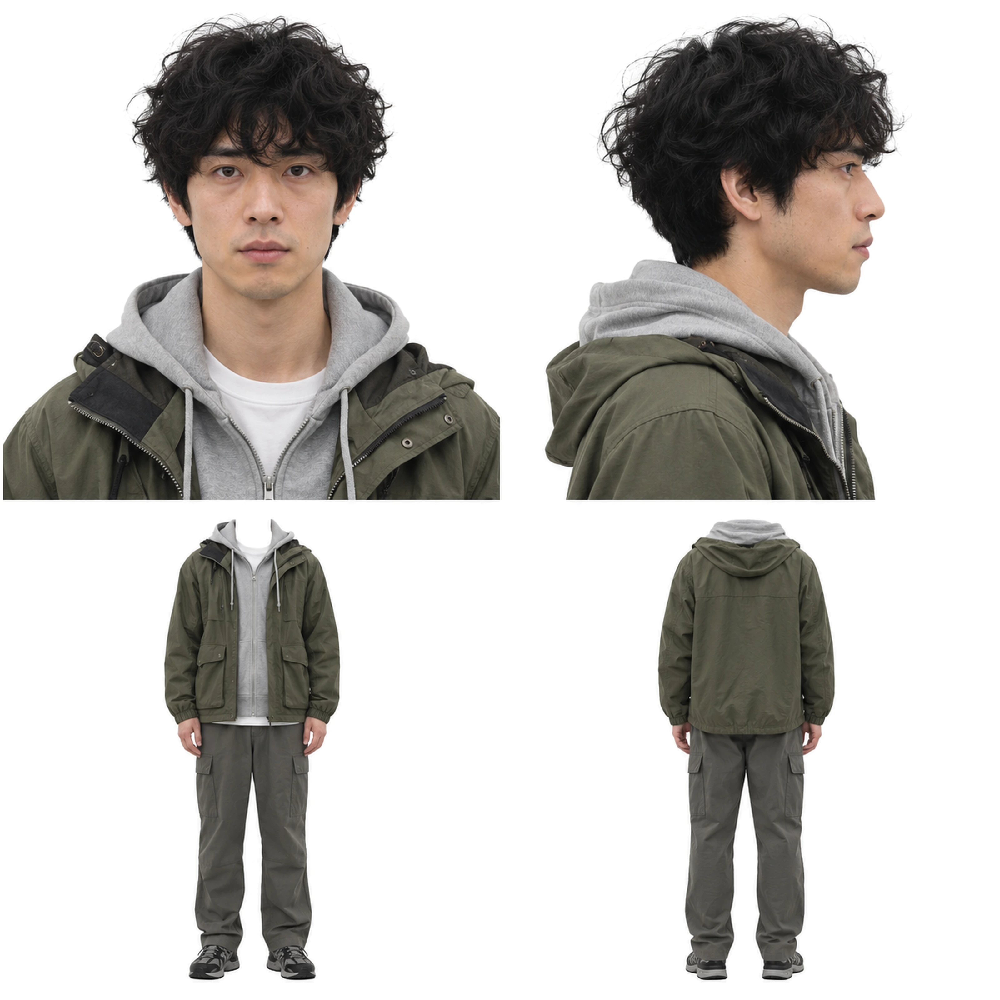
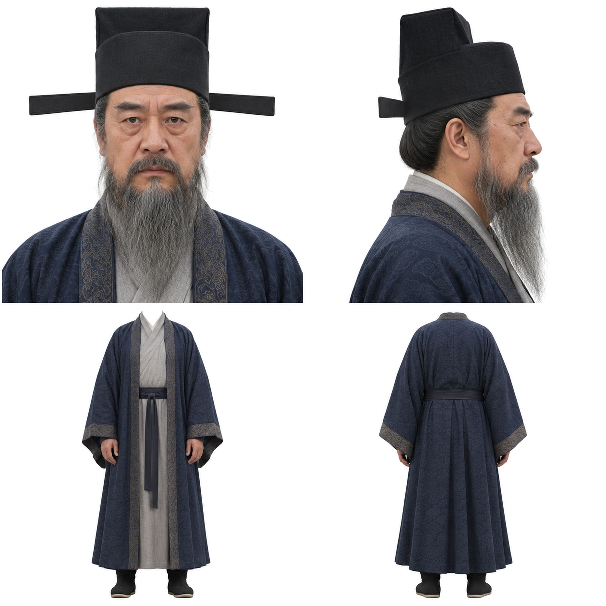
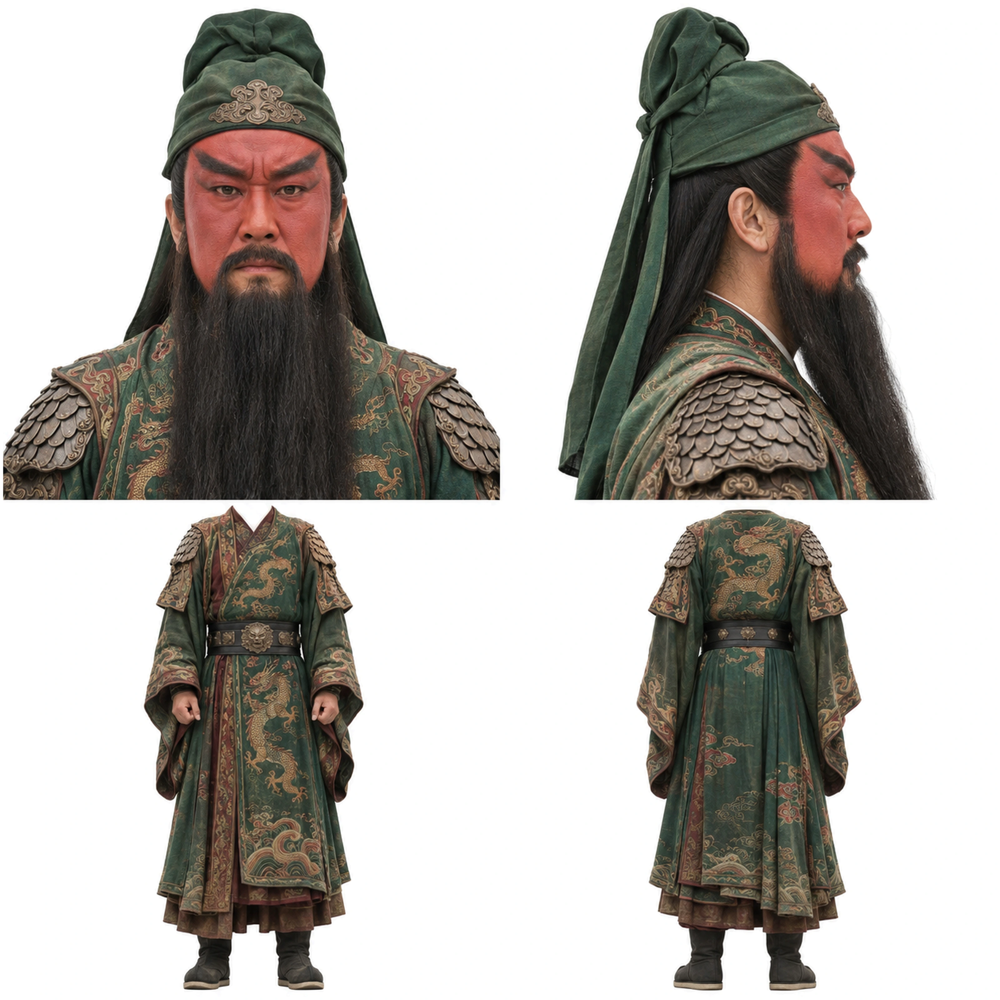
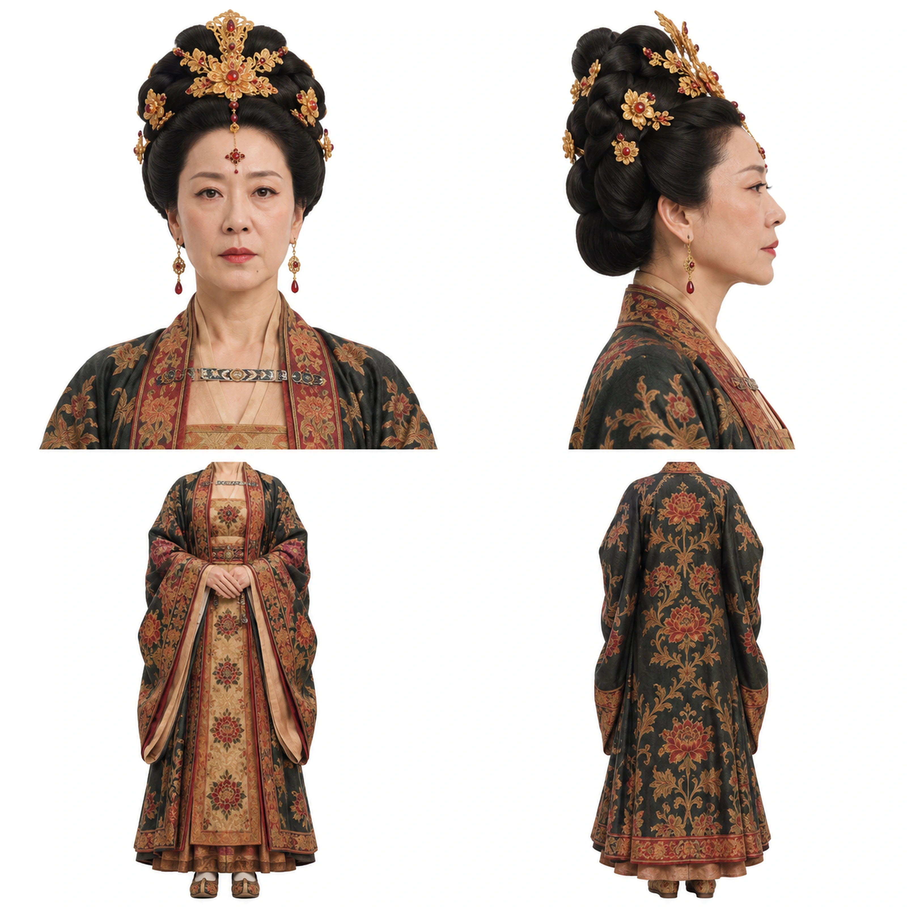
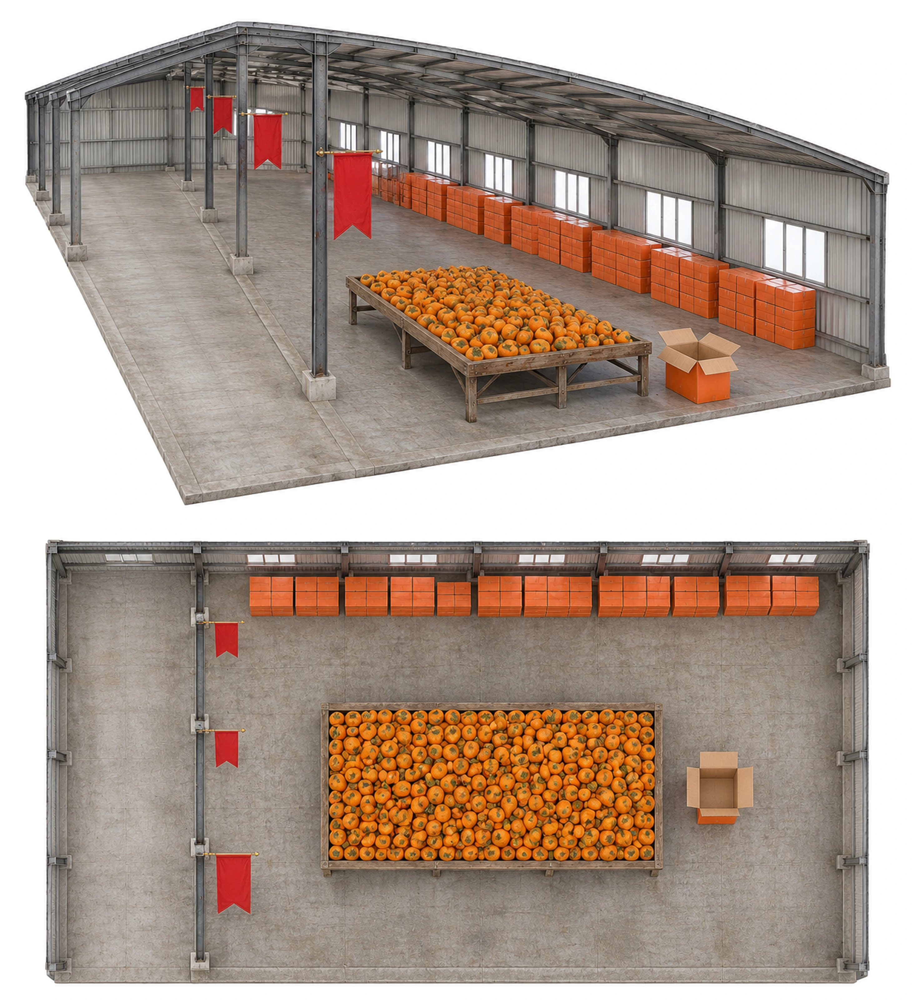
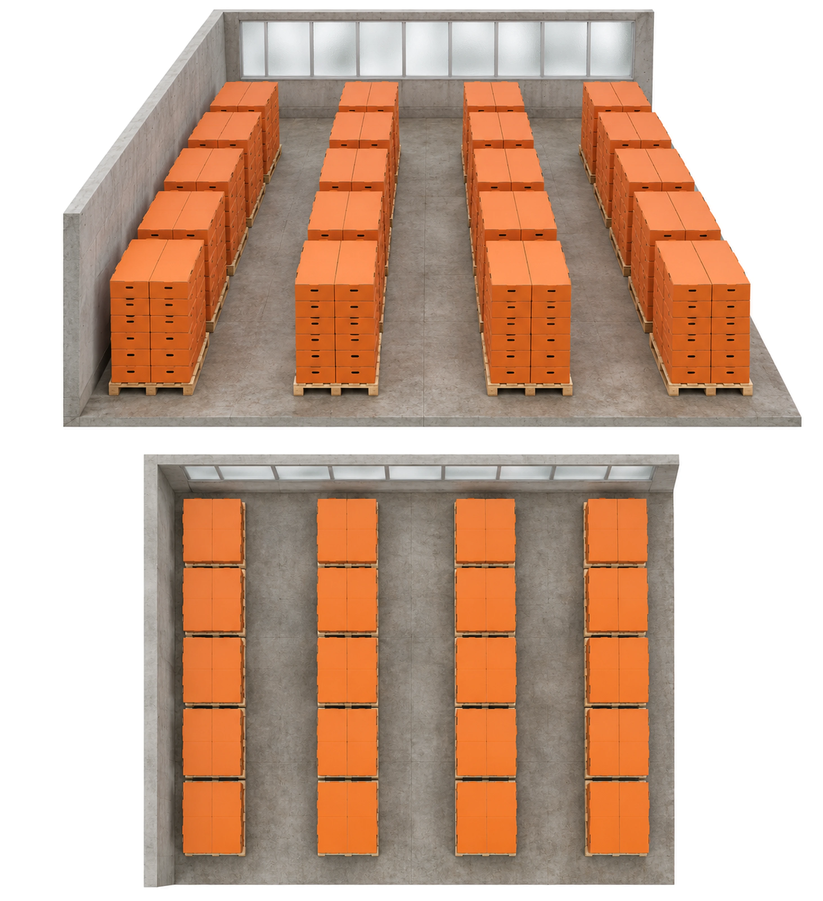
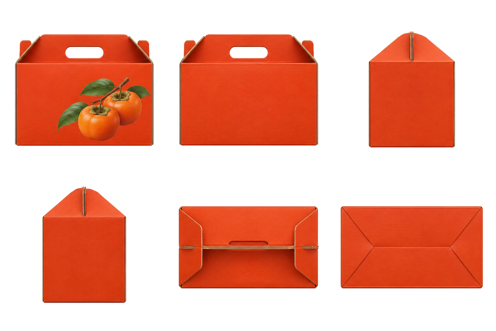

带货种草
脆柿
正在连接在线视频…
视频简介
现代青年与两名古装人物在水果仓分拣脆柿。绿袍武将抱来成品箱，仓内转到贵妇和青年看货对谈。贵妇拿起一颗看成色，结尾切回分拣台和礼箱。
在快手观看原视频 ↗制作资产
角色资产

现代青年
在仓内挑选、分拣和讲解脆柿的主讲人。 黑卷发、橄榄外套与灰色卫衣，动作在装箱和带看间切换。 成片未完整展示的方位按可见造型补全。

黑帽长须文士
在分拣台边装箱，片尾与青年再同框。 黑方帽、灰长须、深蓝长袍。 成片未完整展示的方位按可见造型补全。

绿袍红脸武将
抱礼箱出场并与现代青年交流的戏剧人物。 红色戏妆、黑长须、绿袍和绿头巾。 成片未完整展示的方位按可见造型补全。

金冠贵妇
穿过摆放成品的仓内走道，对商品提出问题并亲手看柿子。 高髻、金冠、朱金花纹袍与朱色面饰。 成片未完整展示的方位按可见造型补全。
场景资产

脆柿仓库分拣区
脆柿仓库分拣区的场景视觉设定，用于空间布局、光影与镜头背景。

脆柿仓库成品区
脆柿仓库成品区的场景视觉设定，用于空间布局、光影与镜头背景。
道具资产
整颗脆柿
亮橙扁圆果，带短绿萼。 台面堆叠与手持特写使用同款外形。 成片未完整展示的方位按可见造型补全。

脆柿礼箱
红橙封合礼箱，果实装饰保持简洁无字。 武将抱箱及成品区整齐码放使用。 成片未完整展示的方位按可见造型补全。
敞口分拣纸箱
内棕外橙、顶盖外折，保持开箱状态。 分拣台用，同一方向从边上放入柿子。 成片未完整展示的方位按可见造型补全。
贵妇金饰发冠
金叶、卷枝和小珠组成高发饰。 贵妇移动及反打时保持冠体正向。 成片未完整展示的方位按可见造型补全。
剧本与分镜
完整剧本与分镜脚本
带货种草 · 脆柿 原片时长 45.07 秒 故事梗概 现代青年与两名古装人物在水果仓分拣脆柿。绿袍武将抱来成品箱，仓内转到贵妇和青年看货对谈。贵妇拿起一颗看成色，结尾切回分拣台和礼箱。 人物 现代青年负责带看；黑帽文士负责装箱；绿袍武将展示成品；金冠贵妇从成品通道走到果堆边试选。 场景 同一仓库的分拣区以散果和敞箱为中心，成品区以成排红橙礼箱和走道为中心。 道具用途 散果、礼箱与分拣箱覆盖挑选、包装和展示。金冠为人物配件。 剧本与分镜 按原片抽帧重建的复拍制作稿。画面未能确认的对白、音效与镜头节奏按下表执行。 | 镜号 | 画面内容 | 镜头视角 | 使用资产 | 动作描述 | 台词/旁白 | 音效 | 单镜头时长 | | 01 | 分拣台铺满橙色柿子 | 平视双人中景 | 现代青年、黑帽长须文士、整颗脆柿、分拣区 | 两人低头挑果并把果子放近敞箱 | — | 果实轻碰、仓内回声 | 4.00秒 | | 02 | 绿袍武将抱现成礼箱走来 | 三人中景 | 绿袍红脸武将、脆柿礼箱、现代青年 | 向青年抬箱展示，青年从果堆转过头 | 武将：这箱给你看看。 | 纸板、脚步 | 6.00秒 | | 03 | 几人在桌边继续装箱 | 斜角群像中景 | 现代青年、黑帽文士、绿袍武将、敞口分拣纸箱 | 逐颗放入，保持台面原有果堆位置 | — | 纸箱摩擦 | 5.00秒 | | 04 | 贵妇沿成品通道走来 | 货箱作前景的侧向跟拍 | 金冠贵妇、现代青年、成品区、脆柿礼箱 | 二人沿礼箱列走停，望向另一道货堆 | — | 衣摆、仓内脚步 | 5.00秒 | | 05 | 贵妇追问，青年回应 | 交替近景 | 金冠贵妇、贵妇金饰发冠、现代青年 | 贵妇抬头问，青年抬手示意果子 | 贵妇：这些柿子有什么不同？ | 底音降低 | 8.00秒 | | 06 | 继续在仓内说明商品 | 侧面双人中景 | 金冠贵妇、现代青年、成品区 | 保持同一行进方向，停在礼箱旁 | 青年：您可以上手看看。 | 远处装箱声 | 7.50秒 | | 07 | 贵妇拿起一颗脆柿 | 手部近景切侧脸 | 金冠贵妇、整颗脆柿、分拣区 | 翻看果皮与萼位 | — | 果子触指 | 4.00秒 | | 08 | 分拣台再次展示箱装 | 多人中景 | 黑帽文士、现代青年、绿袍武将、脆柿礼箱、分拣纸箱 | 文士扶住敞箱，武将举礼箱在后面定格 | — | 纸箱落位、终止音 | 5.57秒 | 时长合计 45.07 秒